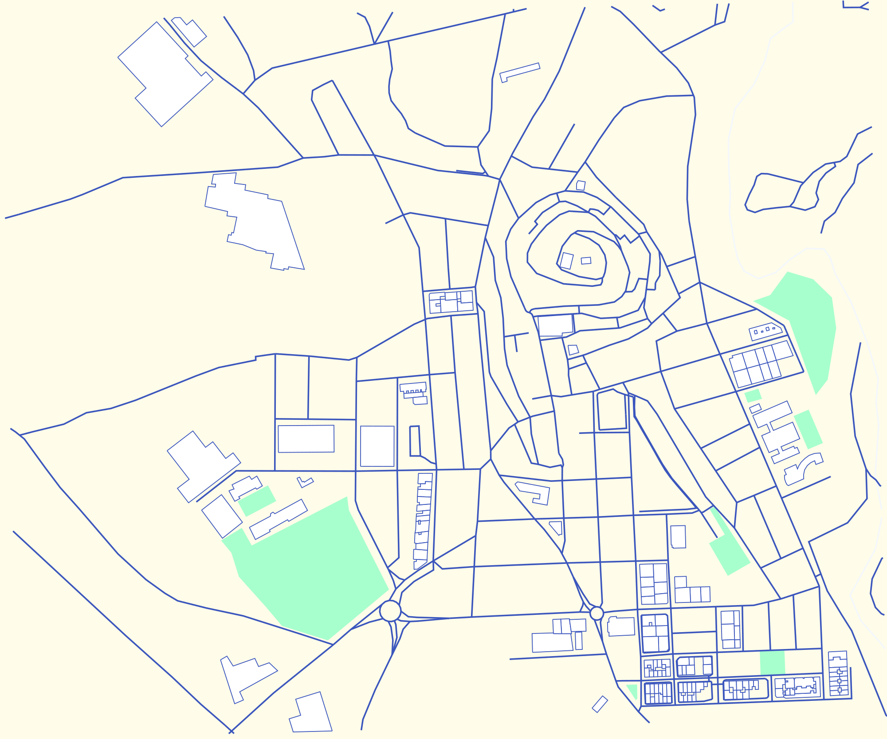
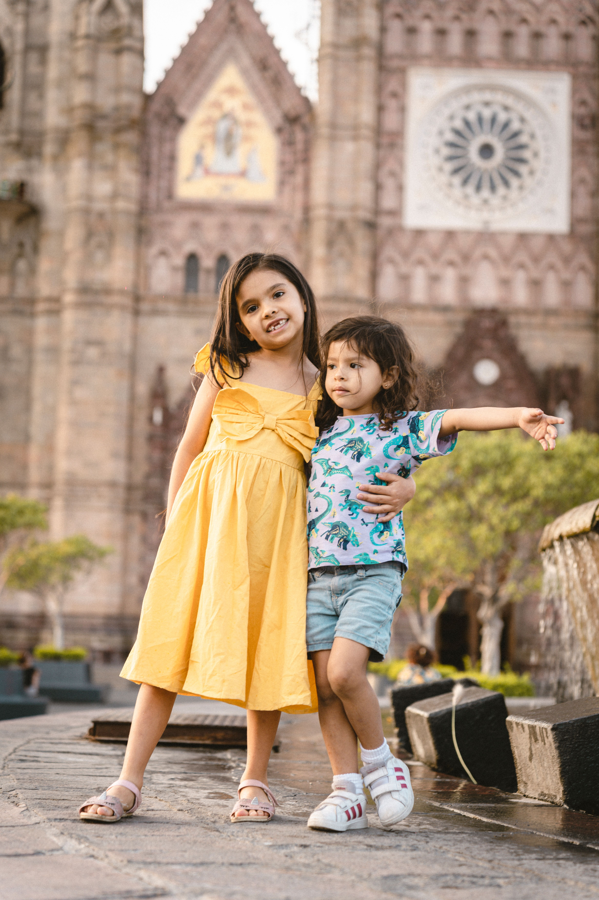
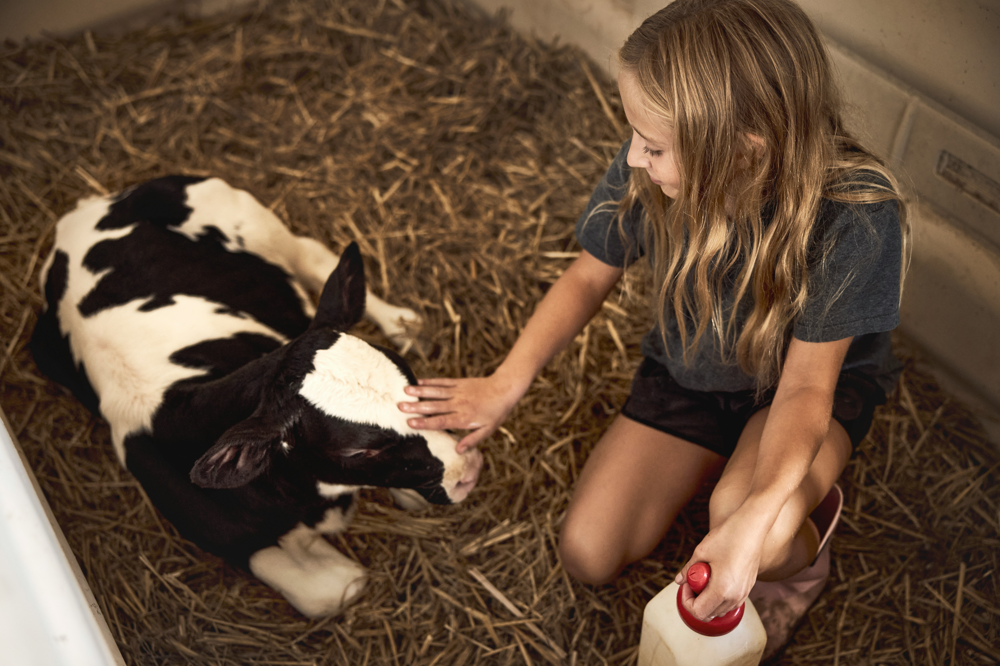

Gincanas adaptadas
Diseñamos cada gincana teniendo en cuenta las características, espacios y necesidades de cada localidad.
LEER MÁS →Creación y gestión de gincanas físicas e inclusivas.

Diseñamos cada gincana teniendo en cuenta las características, espacios y necesidades de cada localidad.
LEER MÁS →
Creamos actividades accesibles para que todos los niños puedan participar y disfrutar juntos.
LEER MÁS →
Los participantes colaboran para superar los retos y conseguir las piezas necesarias para alcanzar un resultado común.
LEER MÁS →En VERDEO creamos y gestionamos gincanas físicas e inclusivas pensadas especialmente para pequeños pueblos de España.
Trabajamos por encargo de los Ayuntamientos, adaptando cada actividad a las características, espacios y necesidades de cada localidad.
Nuestro objetivo es que todos los niños puedan participar conjuntamente, fomentando la inclusión, la interacción y el trabajo en equipo.

Seleccionamos diferentes espacios y localizaciones de la localidad.
Los participantes encuentran diferentes puntos y realizan retos sencillos y accesibles.
Cada reto superado permite conseguir una pieza para construir un resultado común.
Todos colaboran para completar el objetivo final de la gincana.